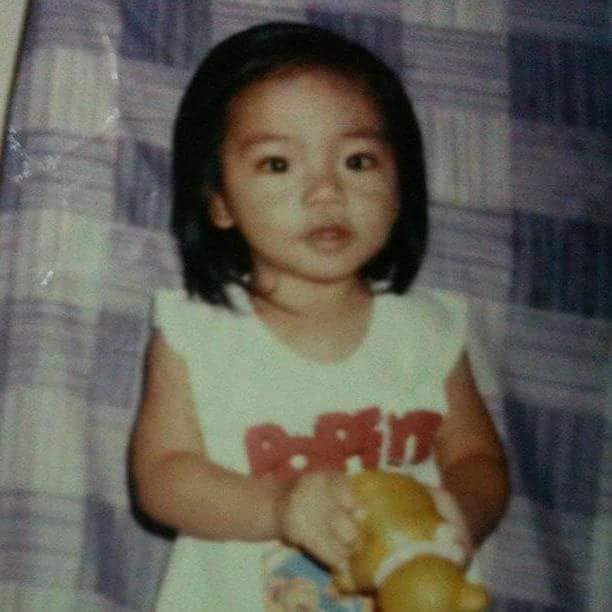
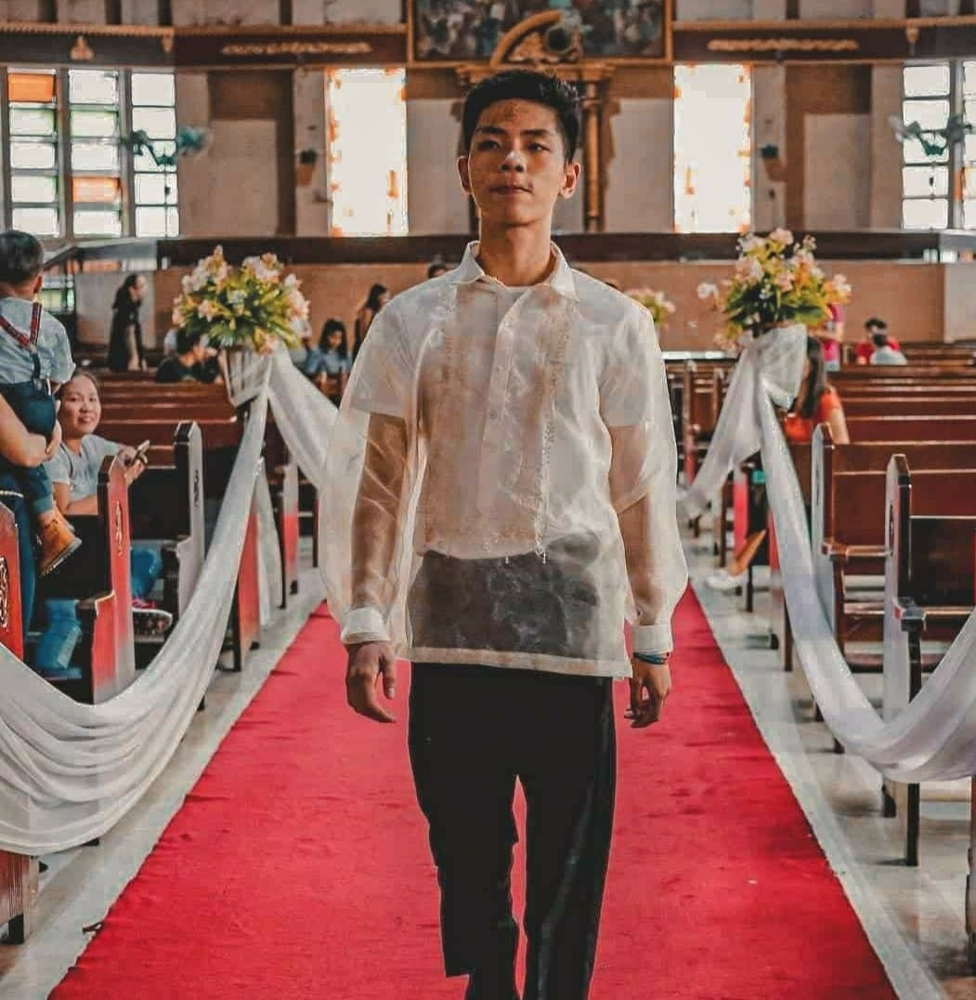
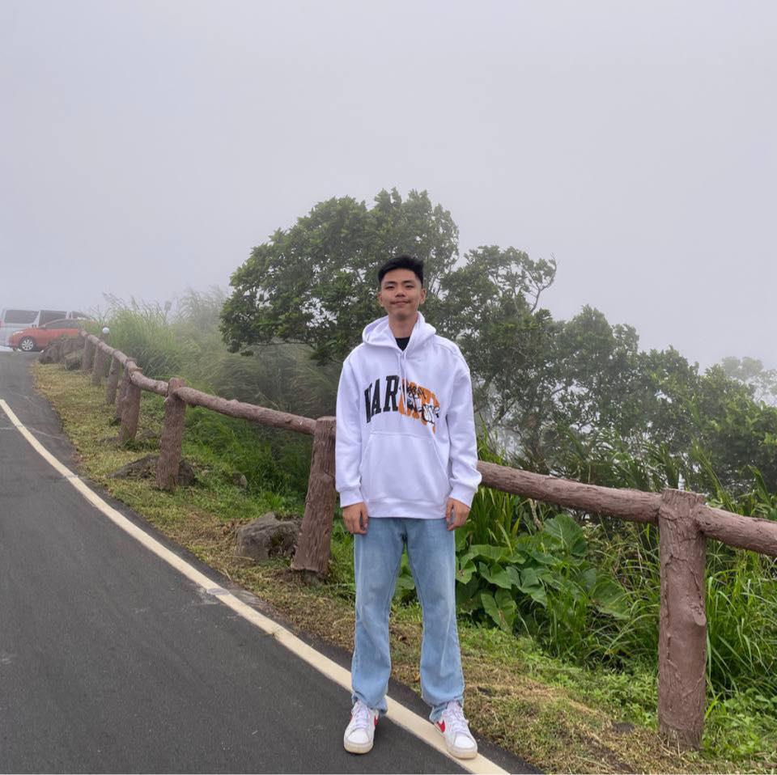

 I was born in Quezon City on April 19, 20041. It has remained my home throughout my entire life2. I grew up in a loving and supportive family3. My family always made me feel valued and secure4. I am the youngest of two siblings5. I have one older sister who guided me as I grew up6. I have always been a proud mama’s boy7. My childhood was filled with happiness and warmth8. I enjoyed playing with my toys every day9. Watching my favorite cartoon shows was one of my hobbies10. I loved spending time outdoors with my family11. We often visited parks and malls together12. Traveling with my family created lasting memories13. I lived in Quezon City my whole life14. I never experienced living in our province in Pangasinan15. One of my happiest memories was having a best friend nearby16. We played basketball almost every day17. We also spent time playing PC games together18. Moving to a new house separated us19. Despite sadness, my childhood remained joyful and meaningful20.
 My early teenage years were difficult and confusing1. I felt lonely in our new neighborhood2. The area was quiet and people rarely went outside3. This made it hard for me to socialize4. I slowly shifted my focus toward academics5. I became more aware of my responsibilities6. High school helped me meet new people7. I formed friendships that helped me feel accepted8. Spending time with classmates improved my confidence9. I learned more about my personality during this time10. I discovered what made me happy11. I also learned how to handle challenges12. Sports became an important part of my routine13. Being active helped me stay healthy and confident14. The pandemic changed everything suddenly15. Staying indoors felt difficult for me16. I missed social interactions and outdoor activities17. Over time, I learned how to adjust18. I found new ways to stay connected with friends19. These experiences helped shape my character20.
 College marked a major turning point in my life1. I had difficulty choosing a school and course2. I was presented with three different options3. After careful thinking, I chose Information Technology4. I realized I was passionate about technology5. I believed the course suited my interests6. I enrolled at the University of the East7. Familiar faces made the transition easier8. My first year was challenging academically9. I had to adjust to new subjects10. Time management became very important11. College schedules were longer and demanding12. I learned how to balance my responsibilities13. Independence became part of my daily life14. I developed discipline and organization skills15. I met new classmates and friends16. Group projects improved my teamwork skills17. I learned how to communicate effectively18. College helped me grow personally and academically19. It continues to prepare me for my future career20.
{kind=link}
{kind=link}
{kind=link}